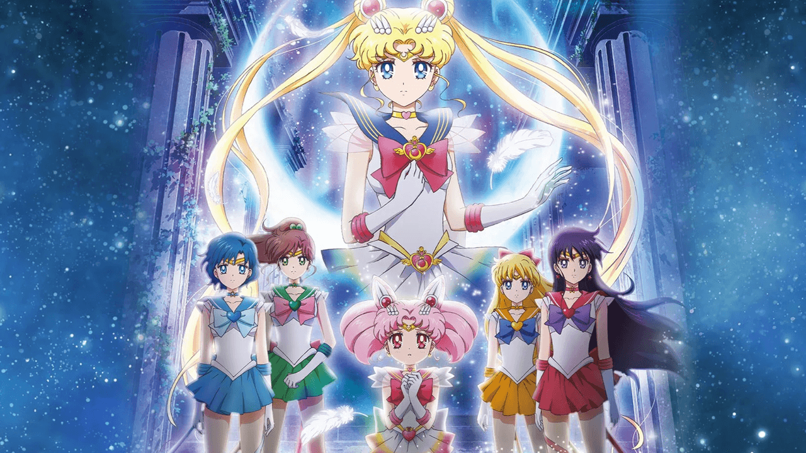
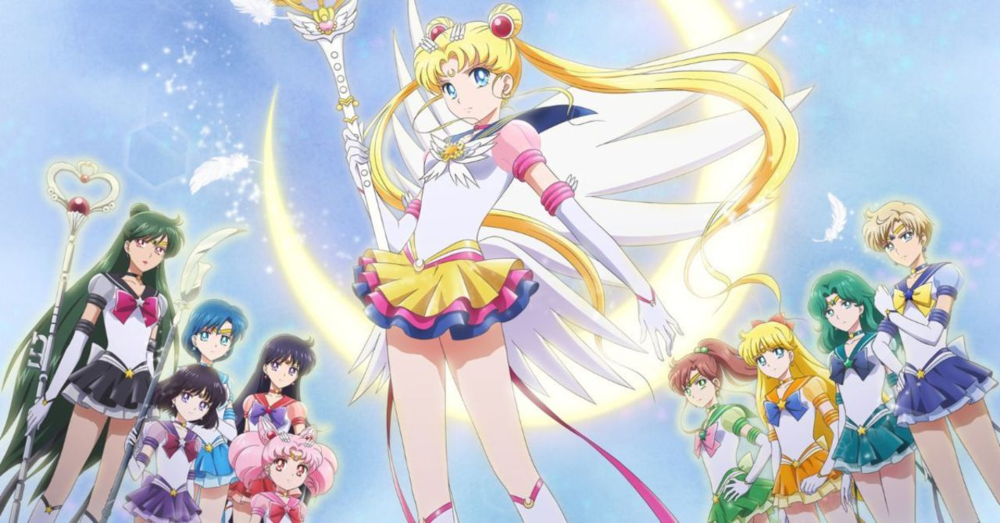
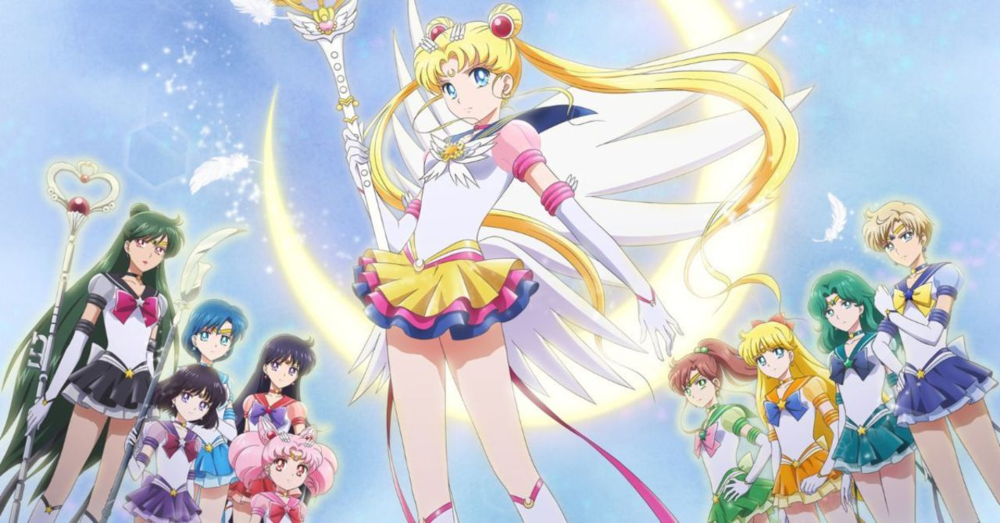

là một bộ phim anime phát hành vào năm 2021 gồm 2 phần phim dựa trên Dream arc trong manga Sailor Moon của tác giả Naoko Takeuchi và là phần tiếp theo của Thủy thủ Mặt Trăng Pha lê. Bộ phim gồm hai phần do Chiaki Kon làm đạo diễn, Kazuyuki Fudeyasu viết kịch bản, Naoko Takeuchi giám sát, và được sản xuất bởi cả Toei Animation và Studio Deen. Phần phim đầu tiên được phát hành vào ngày 8 tháng 1 năm 2021. Phần phim thứ hai được phát hành vào ngày 11 tháng 2 năm 2021.
Netflix đã mua bản quyền và phát trực tuyến hai phần phim vào ngày 3 tháng 6 năm 2021.
- SAILOR MOON ETERNAL:THE MOVIE


-
NHỮNG CUỘC PHIÊU LƯ VÀ THỬ THÁCH
- Phần phim lấy bối cảnh Tokyo khi mùa hoa anh đào đang nở rộ và không khí lễ hội tràn ngập đất nước Nhật Bản. Khi mặt trăng non dần che khuất mặt trời và ánh sáng của nó không còn đủ để bảo vệ Trái Đất, Usagi và Chibi-Usa chạm trán với Pegasus-kẻ đang săn lùng viên Golden Crystal-thứ sức mạnh được cho là có thể phá hủy tất cả các hành tinh. Cùng lúc đó, một nhóm người bí ẩn có biệt danh Dead Moon Circus xuất hiện trong thị trấn,âm mưu đánh cắp viên Legendary Silver Crystal nhằm thống trị vũ trụ.

- HAI PHẦN PHIM ĐƯỢC CÔNG BỐ
- Hai bộ phim hoạt hình Sailor Moon Eternal tiếp tục chuyển thể lại loạt manga cực kì nổi tiếng của Naoko Takeuchi, bắt đầu với Sailor Moon Crystal, chuyển thể từ arc Dead Moon. Sailor Moon Eternal THE MOVIE Phần 1 và 2 sẽ được phát hành tại Nhật Bản lần lượt vào ngày 8 tháng 1 và ngày 11 tháng 2 với Chiaki Kon trở lại từ phần 3 của Sailor Moon Crystal để đạo diễn tại Studio Deen và Toei Animation.
- MEDIA GALLERY
.jpg)
.jpg)
- Thông tin :
- Thể loại: Phiêu lưu,hài hước,mahou shoujo
- Ngày phát hành :
- Part1:08/01/2021
- Part2:11/02/2021
- Nhà phát hành: Deen Studios, TOEI Animation.
- NETFLIX
- Ngày ra mắt: 03/06/2021
film
- Ngày phát hành:
- Nhật Bản:
- Part1:8/1/2021
- Part2:11/2/2021
- Quốc Tế(NETFLIX)
- Part1+2:3/6/2021